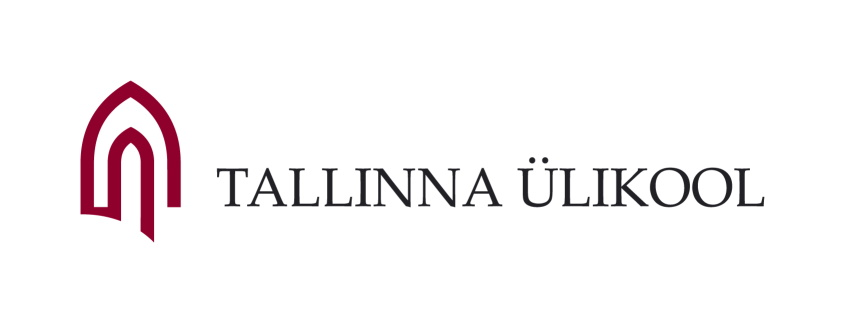

Veeb ja meedia elemendid
See veebileht on loodud õppetöö raames ja ei sisalda mõistlikku sisu
Pole miskit sõnumit
TLÜ
2005 18. märtsil 2005 nimetas Riigikogu Tallinna Pedagoogikaülikooli ümber Tallinna Ülikooliks. Nii jõudis lõpule 2002. aastal alanud protsess, milles Tallinna Ülikooli tollastest üksustest osalesid veel Eesti Humanitaarinstituut, Ajaloo Instituut ja Akadeemiline Raamatukogu.
2005 Ülikooli koosseisu asutati Balti Filmi- ja Meediakool, mis on Põhja-Euroopa ainus ülikoolikolledž, kus on võimalik õppida inglise keeles filmi, televisiooni ja meediat. Kolledžiga liitus ka endine Concordia Audentese Ülikooli meediateaduskond.
2006 Valmis Tallinna Ülikooli Mare hoone.
2007 Üleülikoolilise võõrkeeleõppe tarvis asutati Tallinna Ülikooli keelekeskus. Aastal 2015 anti keskuse ülesanded üle humanitaarteaduste instituudile.
2008 Ülikooli koosseisus asutati Eesti esimene liberal arts tüüpi õppeasutus – Katariina Kolledž, mille eesmärk oli pakkuda Eesti venekeelsete gümnaasiumide lõpetanutele võimalikult paindlikku üleminekut eestikeelsele õppele. Eraldi üksusena lõpetas kolledž tegevuse ülikooli 2015. aasta struktuurireformi tulemusel.
2009 Ülikooli hoonetele anti ladinakeelsed nimed. Praegu on need Terra, Silva, Astra, Mare, Nova ja Vita.
2010 Ülikooli juurde asutati Konfutsiuse Instituut, mis on ülemaailmsesse võrgustikku kuuluv hiina keele ja kultuuri keskus, mille peakorter Hanban (Rahvusvaheline Hiina Keele Nõukogu) asub Pekingis.
2010 Loodi ülikooli koosseisu Kommunikatsiooni Instituut, millega liitus Psühholoogia Instituudis asunud reklaami ja imagoloogia osakond. Ülikooli 2015. aasta struktuurireformi tulemusel õpetatakse neid erialasid Balti filmi, meedia ja kunstide instituudis.
2010 Asutati ülikooli koosseisu Õigusakadeemia, mis on Akadeemia Nord õigusjärglane. Ülikooli 2015. aasta struktuurireformi tulemusel õpetatakse õigusteadust ühiskonnateaduste instituudis.
2012 Ülikooliga liitus Pedagoogiline Seminar, mis on märgilise tähendusega sündmus, kuna sellest ajast peale toimub Eestis õpetajakoolitus vaid ülikoolides. Pedagoogiline Seminar asutati 1935. aastal Eesti Naisliidu algatusel pedagoogilise õppeasutusena ning on katkematult tegutsenud sellest ajast peale.
2012 Valmisid Tallinna Ülikooli Nova ja Astra hooned.
2013 Uksed avab Haridusinnovatsiooni Keskus.
2015 Alustavad reformijärgselt tööd kuus instituuti - Balti filmi, meedia, kunstide ja kommunikatsiooni instituut, digitehnoloogiate instituut, haridusteaduste instituut, humanitaarteaduste instituut, loodus- ja terviseteaduste instituut ning ühiskonnateaduste instituut.
Veebis saab kasutada
- Teksti
- Pealkirjad
- Tavatekst
- Loendid ehk listid
- Graafikat
- Meediat
Mõned mõisted
- List
- Loend, loendina järjendatud andmete kogum
- Tekst
- Kirjutatud, või trükitud sõnade mõtestatud järjend
Gaudeamus
keskaegne tekst, Christian Wilhelm Kindleben (töötlus) / üliõpilaslaul
:,: Gaudeamus igitur juvenes dum sumus! :,: Post jucundam juventutem, post molestam senectutem :,: nos habebit humus! :,: :,: Ubi sunt, qui ante nos in mundo fuere? :,: Vadite ad superos, transite ad inferos, :,: ubi iam fuere. :,: :,: Vita nostra brevis est, brevi finietur. :,: Venit mors velociter, rapit nos atrociter, :,: nemini parcetur. :,: :,: Vivat academia, vivant professores! :,: Vivat membrum quodlibet, vivant membra quaelibet, :,: semper sint in flore! :,: :,: Vivant omnes virgines faciles, formosae! :,: Vivant et mulieres tenerae, amabiles, :,: atque laboriosae! :,: :,: Vivat et respublica et qui illam regit! :,: Vivat nostra civitas, maecenatum caritas, :,: quae nos hic protegit! :,: :,: Pereat tristitia, pereant osores! :,: Pereat diabolus, quivis antiburschius, :,: atque irrisores! :,:
Meediaelemendid veebis
Veebis saab kasutada pea kõiki samasid meediaelemente, mida kasutame ka töölauarakendustes
Pildid
Kui pilt on lihtsalt illustratsioon - näiteks bänner


Kui pilt on tähenduslik - joonis, diagramm vms.


Heli
HTML5 toetab ka otse helifailide kasutamist. toetatakse wav, mp3, ogg ja m4a faile.
Video
HTML5 toetab ka otse videofailide kasutamist. Toetatakse mp4, ogg ja WebM faile.
Minu hobi
Minu hobi on lauatennis, millega ma tegelen juba 11 aastat. Mina treenin LTK Kalevis viimased 5 aastat.

Video Ungarist
Mina olen mitmekorde Eesti meister ja käisin 4 korda Euroopa meistrivõistlustel. Peaaegu igal nädalal käin võistlustel ja igal aastal käin laagrites oma klubiga, näiteks suvel 2020 käisime Ungaris.
Ping Pong sound
Siin võite kuulda kuidas lauatennise mäng kõlab
CSS abil saab objekte paigutada ja liigutada